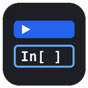

Run code cells on your own Jupyter Server, Kaggle/Jupyter style. Enter the server URL and token, connect, pick a kernel and start it. Shift+Enter runs a cell. HTML output is shown in a safe sandbox (no scripts). If the connection drops, running cells are marked interrupted and you can press Reconnect. After a reload, Connect reattaches to the kernel this app started (variables are kept). Your cells are kept on this device; the token is only kept if you tick Remember.
Uses @jupyterlab/services (BSD-3-Clause) and CodeMirror (MIT).